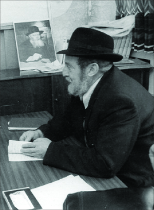

Forever Youthful
For over thirty years R’ Yisroel Leibov served as director of Tzach (Tzeirei Agudas Chabad – Chabad Youth Organization). Nearly all hafatza activities that the Rebbe initiated in Eretz Yisroel went through him. * Twenty years after his passing, Beis Moshiach presents a look into the life of a man whose story is the story of Chabad activity in Eretz Yisroel. * Part 1

R’ Yisroel Leibov was born on 28 Kislev 5671 in Nikopol, Ukraine. He was educated in the yeshiva in his town but with the outbreak of war, his family moved to Poltava from where he went to learn in Tomchei T’mimim from 5684 to 5686.
At the end of the 1920’s, the family moved to Kutais in Georgia where his father, R’ Menachem Mendel, died. Responsibility for supporting the family fell on young Yisroel. He began working in business and quickly became a seasoned businessman who knew how to make money. From the outset, he set aside most of his earnings for tz’daka for Yeshivos Tomchei T’mimim, and he made do with little.
In 1937 he married and moved to Kiev where his wife was from. They lived there for four peaceful years until the Germans invaded Russia in 1941. Kiev was bombed but the German army was still far from the city. The government made trains available for civilians who wanted to flee the city. Each time a train filled up, another train pulled into the station and filled up and moved eastward, making way for the next train.
The extended family, R’ Yisroel, his wife and his mother, his in-laws, two brothers-in-law, their wives and children, loaded all their belongings on two trucks and hurried to the train station the moment they were able to. This was a Friday morning.
When they arrived at the train station, they were happy to discover a half-filled train. But their joy was premature. The Russian gentiles on the train refused to allow them on. Why? No good reason. Their pleading was futile. They had no choice but to turn around and go home for Shabbos.
On Motzaei Shabbos, when they went back to the train station, they heard about what had happened to the train they had hoped to take on Friday. It had been bombed and many passengers were killed.
After a long trip via land and sea, they arrived in Samarkand in 1942. That is where most Lubavitcher Chassidim who survived the war had ended up.
R’ Yisroel’s business acumen was immediately apparent once again. He began selling soap which he made and sold on the black market. In those days this was a serious crime with a stiff penalty, but its rewards were ample. Although he endangered himself to earn this money, he regularly went to R’ Mendel Futerfas who was responsible for the local yeshiva and brought him most of his earnings. R’ Mendel used this money to pay the salaries of the teachers.
Besides maintaining the yeshiva, he gave a lot of money to individuals too. His giving wasn’t only monetary but emotional as well. He would sit and listen to people’s sorrows even though he himself was an embittered soul, since he had no children.
His brother-in-law, Pinchas Sudak, was also involved in dangerous business practices and was nearly caught. He miraculously fled his home at the last minute when the police came to conduct a search on the day that the cooked soap was ready for sale. R’ Yisroel, however, was never harassed by anyone in authority, perhaps in the merit of the tz’daka which protected him.
However, the dangers did not cease. One day, in 1946, his niece, Bas-Sheva Sudak, met the local prosecutor on the street where he lived. The girl knew her and had a relationship with her after bribing her with jewelry a short while previously in order to free her mother who had been arrested. She spoke with the prosecutor who told her that she was about to make an arrest.
The girl tried to inform her uncle, but he did not believe that a girl as young as she had access to such secret information, and he did not run away. That day, his wife was arrested. It was only when his niece used her connections and her mother’s jewelry yet again that she was saved. One week later, the Leibov couple was already on their way to Poland and from there to Poking, Germany.
Upon arriving in Poking, R’ Yisroel got involved in communal activity and was one of those active in founding the first Yeshivas Tomchei T’mimim in free Europe. After the Chassidim moved to Paris, R’ Yisroel was appointed as a member of the committee of Merkos L’Inyanei Chinuch, the European division, the hanhala of Beis Rivka and the hanhala gashmis of Yeshivas Tomchei T’mimim.
In 5709, R’ Yisroel and his wife were one of the first couples to move to the new kfar that the Rebbe had founded in an abandoned Arab village, Safraya. A short while later he was appointed chairman of the vaad of Kfar Chabad.
WORK TO SAVE THE CHILDREN
Many immigrants arrived in Eretz Yisroel in those days, mainly from Arab countries. The Zionists settled them in transit camps and various settlements and exerted much pressure on them to send their children to government schools. At the same time, they withheld money from them for basic religious services like a shul or mikva.
R’ Yisroel saw this and he couldn’t abide it. As someone who had seen government subversion of the chinuch of Jewish children in other places, and was moser nefesh for their chinuch, he could not remain indifferent. He immediately joined Pe’ilim (now Yad L’Achim), the organization that fought for the chinuch of Jewish children.
Every morning, no matter the weather or the mood, R’ Yisroel went out with a bit of food in his bag, and walked to the main highway where he took public transportation or hitched a ride to one of the new moshavim. There he spoke to the rav, shochet, or community leaders and inspired them with impassioned words about their responsibility to preserve Jewish tradition among their people.
At the end of a long day, he would return to Kfar Chabad and immediately sit down and learn Ein Yaakov or Mishnayos with people.
Sometimes, R’ Yisroel would get directly involved on the education front. When he would meet children of the right age, he would try very hard to place them in yeshiva dormitories. Many of the children he got involved with switched to Yeshivos Tomchei T’mimim and went on to live their lives as Chassidim in every respect.
An example of a Chassid like this is R’ Moshe Edery. After his family arrived in Eretz Yisroel, they were settled in a transit camp in Ashkelon. The following month, R’ Yisroel Leibov arrived in town. He noticed the 11 year old Moshe running around the marketplace, trying to earn some money for his family. “I was always concerned about parnasa. I learned how to sew shoes and I planted vegetables around the tin hut in the camp. The day R’ Yisroel met me, I was busy selling pails of ice with petel (raspberry syrup) to passersby.”
With his mother’s consent, the brothers Yaakov and Moshe were taken to Kfar Chabad. R’ Dovid Lesselboim met them at the Beit Dagan junction, and from there it was on to life in Tomchei T’mimim.
In the memoirs of R’ Shlomo Shtentzahl, the rosh yeshiva of Porat Yosef in Rechovot, he tells an interesting anecdote that occurred when he went with R’ Yisroel on a registration campaign:
“About forty years ago, I went with R’ Yisroel Leibov to the transit camp in Be’er Yaakov in order to look for children to place in Torah schools. Immigrants from all sorts of countries lived there. On our way, we passed a house with loud voices in Russian coming from the yard. R’ Leibov, a Russian himself, went over to the people and spoke to them in Russian. He saw a child walking around and asked from where in Russia they came.
“They mentioned the name of some village and R’ Yisroel’s eyes lit up and he said he had fled through that village. When he had spoken to the Jews there, they had told him that a Jewish boy had been born and there was no mohel to do the bris. Leibov had escaped with another Jew who knew how to circumcise and he prepared a kitchen knife for the bris. The bris was performed with a minyan of Jews. The people told Leibov, this is the boy who had the bris, the one you see walking around. I think he arranged for this boy to be placed in a religious school.”
CHAIRMAN OF TZACH
His work with children was blessed materially and spiritually, but for the Rebbe this was not enough. The Rebbe demanded that he get involved in Chabad activities at the Tzach activity center which had been founded at that time. When, in 5714, he was asked to coordinate Tzach’s activities, the Rebbe told him to make sure there was no encroaching on R’ Leib Cohen who served in that position until that point. Only after ascertaining that there was indeed no issue of encroachment, since R’ Leib had left the position, did the Rebbe approve of R’ Yisroel taking the job.
Until he took on the role, Tzach had just two centers in Eretz Yisroel, one in Yerushalayim, and one in Kfar Chabad which served as a base for Anash from Tel Aviv and Lud as well. The activities focused on shiurim in yeshivos and the “Evening with Chabad” programs. It was run by a few people who received a paltry salary for nominal work.
Shortly after taking the job, the Rebbe said that Tzach should pay salaries to at least some of the workers, according to its financial means. R’ Yisroel wrote to the Rebbe that under the circumstances there was no need for a full time position at the activity center, and in any case, the Tzach coffers could not afford a salary like that. The Rebbe responded that this was the decision of the hanhala in Eretz Yisroel, while hinting that the decision about whether a full position was needed depended on the character of the directors.
The hint was understood and the character of the director began to show itself. R’ Yisroel saw to the establishment of a nationwide directorship for Tzach that was comprised of various local representatives in Eretz Yisroel and began to open branches all over the country. In 5718, R’ Yisroel was appointed chairman of Tzach in Eretz Yisroel and he served in this role to his final day, for 36 years.
Already during his first years in this position, the activities were stepped up in a big way, with many activists throughout the country joining the work as he oversaw the entire network and was responsible for activities on holidays throughout the country, from Mivtza Dalet Minim to Chanuka, mishloach manos and shofar, and activities in Miron on Lag B’Omer.
Many campaigns and instructions from the Rebbe passed through him. He did everything quietly and effectively, becoming one of the most influential people in matters of Jewish life in Eretz Yisroel, whether with spreading the wellsprings or fighting the wars of Moshiach for Mihu Yehudi etc.
He accomplished all this without being paid and continued to live on the salary that he got from Pe’ilim, work that he continued, as the Rebbe told him to do.
REAL GRATIFICATION FOR THE SOUL
The burden of work at Pe’ilim together with his work for Tzach, demanded most of his time. Throughout the day, he was constantly on the road, going from making a house call to a government office and from there to a shiur, etc. The Rebbe acknowledged this in an interesting manner when R’ Yisroel was in mourning in the year 5720 and he wrote to the Rebbe that his traveling did not allow him to say all the Kaddishim a mourner says.
The Rebbe wrote, “Obviously, spiritual gratification and ascendancy of the soul cannot come through a decrease in Torah and mitzvos, and chinuch al taharas ha’kodesh is a fundamental aspect of that and the merit of the many are dependent on him (in an incomparable way to saying Kaddish), from which we understand that you should not diminish your holy work in chinuch al taharas ha’kodesh; on the contrary, increase it. In order not to miss out (as much as possible) in what you write of, there is place to suggest that in addition to saying Kaddish at times you can manage to say it, you can hire someone to say it. Thus, your holy work will not be diminished.”
THE MOROCCANS IN KFAR CHABAD
As mentioned, the work of Pe’ilim focused on Jews from Arab countries. These simple Jews with sincere faith were brought to Eretz Yisroel and torn from their religion one after the other. Their children were sent to public schools where they were taught heresy. The Pe’ilim activists charged into battle and fought for the soul of every child.
Since the new immigrants from these countries were sent to live in moshavim founded at that time, the activists worked to send as many Jews as possible to religious yishuvim. That is how Moroccan Jews came to Kfar Chabad.
Mrs. Simcha Ohana told how when she arrived by boat from France, they were welcomed by representatives of many parties who promised them money if they came and lived at their moshav, since there was a big demand for children of school age. But R’ Yisroel came and said: We don’t have money but we have yiras Shamayim and that is how the Ohana family moved to a tiny apartment in Kfar Chabad.
R’ Yisroel received constant instructions and guidance from the Rebbe about how to integrate the Moroccan immigrants with the residents of the Kfar. The Rebbe told him to found a shul for them in which they could daven in their nusach, but the children were to learn how to daven in the Chabad nusach.
The Rebbe wanted to ensure that there would be joint farbrengens for Moroccans and Anash. “They should often farbreng together in order to negate from the get-go any consideration of division chas v’shalom,” he wrote to R’ Yisroel. When he wrote to the Rebbe that due to his involvement with Tzach, he was not involved with the Moroccans, the Rebbe responded, “This is a matter for Tzach, the issue of the Moroccans in Kfar Chabad.”
In later years, when more immigrants arrived including those who already knew Lubavitch from its work in Morocco, the Rebbe said to give special attention to these immigrants.
His extreme honesty was legendary. He never took a penny from Tzach. Even when he made a personal call from his office, he would put a coin in the pushka near his desk. He never bought a car so as to save on expenses and he used public transportation.
Even when the costs of Tzach’s activities grew, and raising the necessary funds in Eretz Yisroel became impossible, he volunteered to travel to the US for fundraising purposes and insisted on paying for the ticket out of his own pocket. “I am traveling to the Rebbe shlita,” he would argue.
A few years later, when the weight of his responsibilities in Tzach forced him to leave his position with Pe’ilim, the Rebbe said to R’ Sholom Ber Lipschitz, “Where will you get another such honorable man?”
More about his life, his activities in Tzach and instructions from the Rebbe, in the next article, G-d willing.
D. Levanon. "Forever Youthful." Beis Moshiach, no. 927 (May 21, 2014).